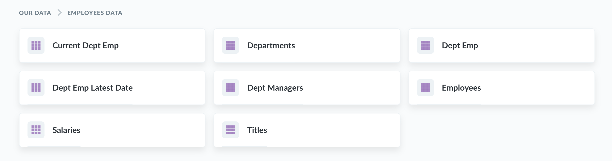
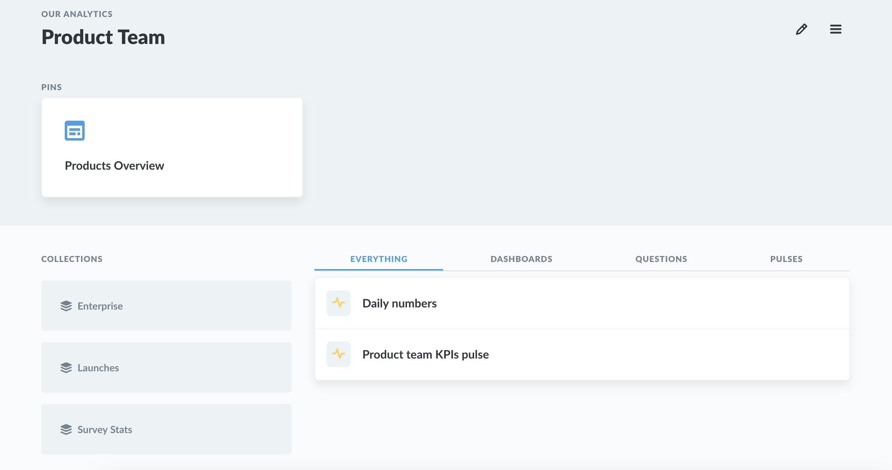
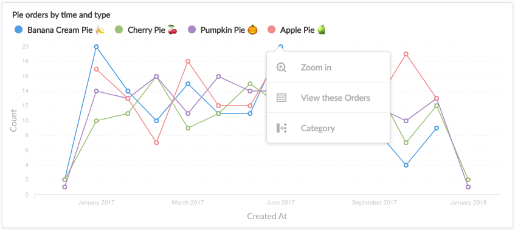
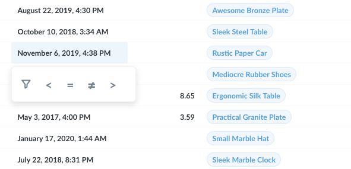
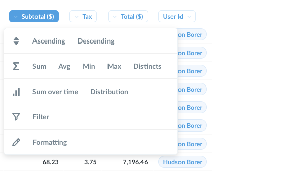

Metabase. Руководство пользователя 03. Исследования в Metabase
Перевод страницы документации Metabase Exploring in Metabaseopen in new window.
Посмотрите что сделала команда
Начните с просмотра работы товарищей: уже созданных дашбордов, диаграмм и вопросов, прикреплённых на домашней странице или в коллекциях.
Просмотрите данные
Для погружения в исследование данных в Metabase нажмите на одну из баз данных внизу домашней страницы, а затем на одну из таблиц. Также к списку баз данных ведёт кнопка Browse data в верхней панели навигации. Попробуйте нажать на иконку автоматического исследования данных на любой таблице.

Изучение коллекций
Коллекции в Metabase похожи на каталоги. В них хранятся дашборды, диаграммы и другие коллекции. Нажмите на коллкцию в секции Our analytics домашней страницы, или нажмите Browse all items для отображения полного списка.

Полезные дашборды или вопросы закрепляют вверху коллекции. Все дашборды, закреплённые в коллекции Our Analytics отображаются на домашней странице.
Изучение дашбордов
Дашборды это наборы диаграмм используемые регулярно. Узнайте больше о дашбордахopen in new window.
Если вы нажмёте на часть диаграммы, такую как столбец в гистограмме, или точку на линейном графике, вы увидите меню с действиями.

В этом примере с заказами пирогов распределённом по времени, нажатие на точку на этой линейной диаграмме даёт нам следующие возможности:
- Zoom in — посмотреть распределение заказов бананового пирога в июне 2017 по времени.
- View these Orders — посмотреть список заказов бананового пирога в июне 2017.
- Break out by a category — посмотреть заказы банановых пирогов в июле 2017 разделённые по статусу клиента (новый, VIP), или другим параметрам заказа. Разные диаграммы имеют разные параметры такие как Местоположение или Время.
Имейте в виду что диаграммы построенные через SQL сейчас не имеют таких параметров.
Другие диаграммы тоже позволяют вам фильтровать содержимое диаграммы или таблицы. Например, вы можете кликнуть на одном из символов неравенства чтобы посмотреть график значений колонки Subtotal меньших 100$ или где значения в поле Purchased-at превышают 1 апреля 2017.

Нажатие на идентификаторе таблицы позволяет перейти в детализированные обзор одиночной записи. Например, нажав на идентификатор клиента вы увидите весь профиль клиента.
Изучение сохранённых вопросов
Каждый график на дашборде называется "вопрос". Нажатие на заголовке вопроса приведёт вас к подробному представлению этого вопроса.
При изучении подробного представления вопроса, используйте описанные выше действия. Нажимайте на заголовки таблиц чтобы увидеть больше возможностей, таких как суммирование значений столбца, или фильтрация на основе выбранного столбца.
Один из наших любимых способов исследования — опция Распределение (Distribution). Она показывает вам сколько строк в данной таблице, группируются по колонке на которую вы нажали. Так что если у вас есть таблица с пользователями и вы кликните на колонку с возрастом и выберите Distribution вы увидите гистограмму с количеством пользователей в каждой возрастной группе.

Пользовательские вопросы
Что делать если созданные дашборды и вопросы не подходят? Давайте изучим как задать новый вопрос.